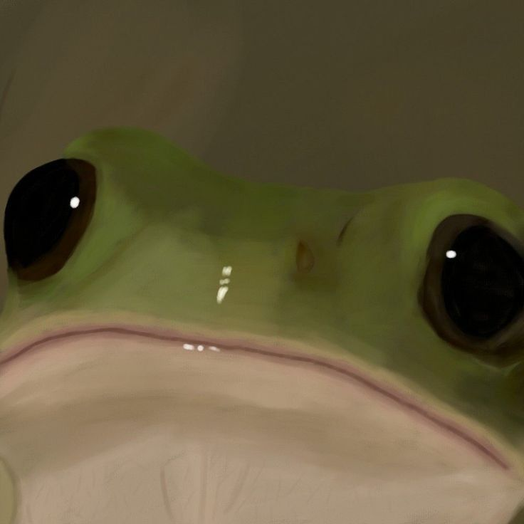

🐸 Configure seu horário de trabalho
| Dia | Entrada | Saída | Pausa (min) | Total (horas) |
|---|
🐸 Status do Sapinho
O sapinho está neutro. Vamos fazer progressos! 💼
Registre seus horários no lago com estilo!
| Dia | Entrada | Saída | Pausa (min) | Total (horas) |
|---|
O sapinho está neutro. Vamos fazer progressos! 💼